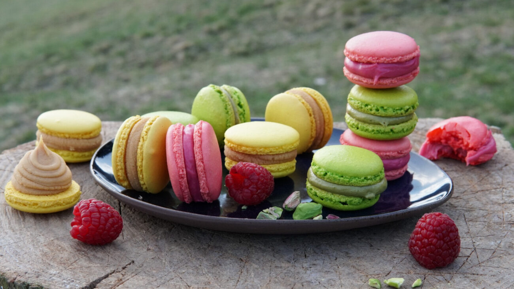

Macaron Francesi alle Confetture
I raffinati dolcetti della pasticceria parigina: due guscetti di meringa alle mandorle, leggeri e dalla crosticina liscia, che racchiudono un cuore fruttato e intenso a base di confetture (lamponi, albicocche o frutti di bosco).

Ingredienti
Per i Guscetti di Macaron:
- 150g di Farina di mandorle finissima
- 150g di Zucchero a velo
- 110g di Albumi (divisi in due dosi da 55g, a temperatura ambiente)
- 150g di Zucchero semolato + 40ml di Acqua (per lo sciroppo)
- q.b. Colorante alimentare in gel o polvere (rosa/rosso per i lamponi, arancio per le albicocche)
Per il Ripieno (Varianti di Confettura):
- Variante Lampone: 150g di confettura o gelatina di lamponi ben densa.
- Variante Albicocca: 150g di confettura di albicocche setacciata.
- Variante Frutti di Bosco: 150g di confettura di mirtilli o frutti di bosco.
- Nota: Se la confettura è troppo liquida, scaldata in un pentolino con 1g di pectina o colla di pesce per raddensarla.
Procedimento
- Tant-pour-Tant: Setaccia insieme la farina di mandorle e lo zucchero a velo in una ciotola capiente per eliminare qualsiasi grumo. Unisci i primi 55g di albumi non montati per formare una pasta di mandorle densa.
- Meringa Italiana: In un pentolino cuoci lo zucchero semolato con l'acqua fino a raggiungere i 118°C. Nel frattempo inizia a montare gli altri 55g di albumi. Versa lo sciroppo caldo a filo sugli albumi mentre monti a media velocità fino a raffreddamento.
- Macaronage: Aggiungi il colorante in gel scelto alla meringa. Incorpora la meringa alla pasta di mandorle in tre riprese con movimenti decisi ma delicati (dal basso verso l'altro e schiacciando sui bordi) finché l'impasto cade "a nastro".
- Dressaggio e Croustage: Trasferisci l'impasto in una sac-à-poche con bocchetta liscia da 8mm. Forma dei dischetti di circa 3 cm su una teglia con carta forno (o tappetino in silicone). Batti la teglia sul tavolo per far uscire le bolle d'aria. Lascia riposare a temperatura ambiente per 30-60 minuti fino a creare una pellicola asciutta in superficie.
- Cottura: Inforna in forno statico preriscaldato a 140°C per 12-15 minuti. In cottura si deve formare il classico collarino alla base. Sforna e fai raffreddare completamente prima di staccarli.
- Farcitura e Assemblaggio: Metti le confetture prescelte in una sac-à-poche. Spremi un ciuffo di confettura al centro di un guscio e richiudi delicatamente con un secondo guscetto ruotando leggermente.
💡 Note Finali e Consigli dell'Mastro Pasticcere
- La fase di riposo (Croustage): Fondamentale! Non infornare i macaron finché la superficie non risulta completamente asciutta al tatto (toccandoli delicatamente l'impasto non deve appiccicarsi al dito).
- Maturazione: I macaron farciti con la confettura sono infinitamente più buoni il giorno dopo! Riponili in frigorifero per 24 ore in un contenitore ermetico: l'umidità della frutta ammorbidirà l'interno mantenendo il guscio croccante.
- Conservazione: Si conservano in frigorifero per 4-5 giorni oppure si possono congelare già pronti.